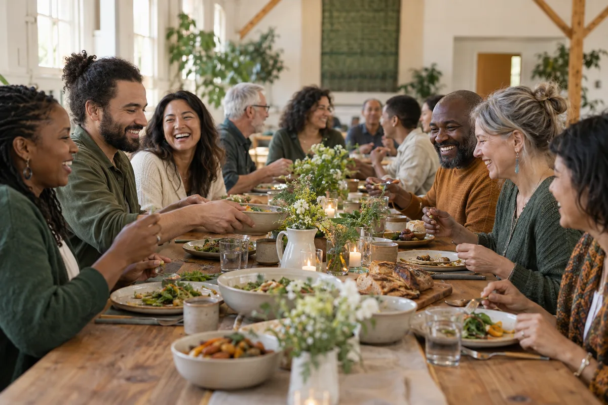
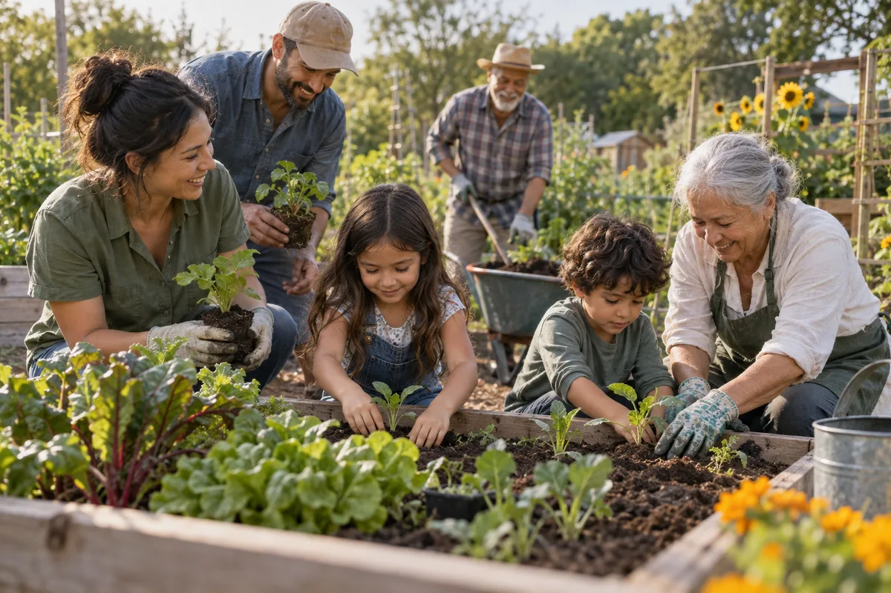

Find your people.
Discover groups, get to know your community, and turn a first hello into a familiar face.
Meet the member experienceMore connection. More belonging.
A shared table. A familiar face. Someone who checks in. Bring the life of your church community together with GatherWell.
Explore freely. No sign-up needed for the demo.

Built around people.
Made for life together.
Less scattered. More connected.
Keep the practical things in one place, so there’s more room for what matters: knowing people and showing up for them.
Discover groups, get to know your community, and turn a first hello into a familiar face.
Meet the member experienceFrom a neighborhood dinner to a volunteer night, see what’s coming up and let people know you’ll be there.
Explore the demo gatheringsShare a prayer, offer encouragement, and give your care conversations the attention they deserve.
Step into the pastor workspaceFaith in the everyday
A conversation over coffee. A shared purpose. A chance to lend a hand. Make the next connection a little easier.

Illustrative community imagery. The interactive demo uses fictional people and gatherings.
One community. Two ways in.
Take a look around with ready-to-use demo access.
Bring people, gatherings, communication, and follow-up into one calm workspace.
Make yourself at home. Your groups, gatherings, and community are all within reach.
Demo access is prefilled. Choose “Continue to demo” to enter. All people and activity are fictional; messages and giving are simulated.
A few things to know
Start with a look around.
GatherWell is a community workspace for churches. It brings people, groups, events, communication, prayer, and ministry insights into one place, with experiences for pastors and members.
Yes. Choose either demo above, then select “Continue to demo” using the prefilled details. You can explore the sample community without entering your own information.
The pastor workspace focuses on managing people, gatherings, communication, and care. The member experience focuses on finding groups, joining events, sharing prayer, and following a personal community journey.
No. Messages, giving, and assistant actions are simulated. The demo uses fictional data, and changes may reset. It is a place to explore how GatherWell works.